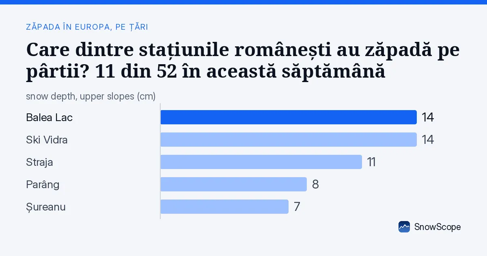

Care dintre stațiunile românești au zăpadă pe pârtii? 11 din 52 în această săptămână
Zăpada din sezonul incipient este rară în România acum. Doar 11 din cele 52 stațiuni ale țării au zăpadă măsurabilă pe pârtiile superioare, în principal deasupra a 2000 m unde aerul este suficient de rece pentru a o păstra.
Vezi prognoza de zăpadă pentru Balea Lac în aplicația SnowScopeGrosimea zăpezii, alerte și harta 3D, gratuit.
Situația stațiunilor astazi
Acoperirea de zăpadă este subțire și fragmentată la majoritatea stațiilor de telescaun. Balea Lac conduce cu 14 cm la 2032 m, urmată de Ski Vidra și Straja cu 14 cm și 11 cm respectiv. Sub 1500 m, practic nu există zăpadă nicăieri în România astazi. Linia zăpezii se află la 1700 m, ceea ce înseamnă că stațiunile inferioare încă mai asteaptă.
Tabloul s-a schimbat brusc în ultimele trei zile. Acoperirea de zăpadă s-a redus de la 3590 km² ieri la 2530 km² astazi pe măsură ce aer mai cald s-a instalat. Acum o săptămână, România avea zăpadă pe 7470 km² de teren înalt, deci am pierdut teren constant de la jumătatea noiembrie.
| Stațiune | Grosimea zăpezii | Zăpadă nouă, 72 h | Zilele următoare | Vârf |
|---|---|---|---|---|
| Balea Lac | 14 cm | 5 cm | 8 cm | 2.032 m |
| Ski Vidra | 14 cm | 2 cm | 10 cm | 1.974 m |
| Straja | 11 cm | 0 cm | 9 cm | 1.865 m |
| Parâng | 8 cm | 0 cm | 11 cm | 1.768 m |
| Șureanu | 7 cm | 3 cm | 11 cm | 1.968 m |

Cele mai bune condiții și adâncimi după altitudine
Zona fierbinte Retezat a acumulat 46 cm în ultimele 72 de ore și conduce țara cu mult în față. Munții Rodna au strâns 24 cm, iar Munții Parâng 13 cm. Acestea sunt singurele zone cu adevărată adâncime de zăpadă, și se află în părțile cele mai înalte ale lanțurilor lor.
Deasupra a 2000 m, adâncimea medie de zăpadă este de 12 cm pe terenul modelat, cu 99 la sută acoperire. Între 1500 și 2000 m, doar 47 la sută din teren este acoperit și adâncimea medie este doar 2 cm. Sub 1500 m, zăpada este rară și superficială. Dacă vrei să schiezi pe ceva solid, trebuie să fii deasupra a 2000 m la o stațiune lângă una din aceste zone fierbinți.
Ce ne spun benzile de altitudine
Altitudinea este totul acum. La 500–1000 m, nu există zăpadă. Între 1000–1500 m, acoperirea este 2 la sută și adâncimea este nimic. Saltul vine la 1500 m, unde 47 la sută din teren are 2 cm, în principal pe versanți cu expunere nord. Doar deasupra a 2000 m tabloul este însorit: 99 la sută alb și 12 cm adânc în medie.
Acest model este tipic pentru începutul sezonului în munții uscați. Nopțile sunt suficient de reci pentru a păstra zăpada la altitudine, dar zilele sunt calde și pârtiile inferioare încă mai iau ploaie sau topire. Zăpada timpurie este fragilă. Terenul stâncos și acoperirea subțire înseamnă că pericolele sunt mai aproape de suprafață.
Săptămâna următoare
Ninsoare vine. Modelul nostru arată 13 cm de zăpadă proaspătă în următoarele trei zile, cu 23 noiembrie ca ziua cea mai grea cu 14 cm. Până atunci, stațiunile ar trebui să vadă 8–11 cm de nouă acoperire. Aceasta va ajuta versanții de altitudine medie și poate împinge linia zăpezii cu câteva sute de metri mai jos.
Perspectiva este mixtă. Săptămâna a doua (27 noiembrie – 3 decembrie) aduce doar 6 cm, dar semnalul pentru finele lui noiembrie este clar. Balea Lac ar putea-și vedea adâncimea dublată. Stațiunile din zonele Rodna și Retezat sunt bine poziționate pentru a-și construi o bază utilizabilă până la weekend.
Cum s-a desfășurat săptămâna
Inceputul lui noiembrie a fost nefavorabil stațiunilor. Pe 16 noiembrie, Borsec avea 48 cm și 6630 km² din România era albă. Pe 17 noiembrie, Havas Bucsin conducea cu 31 cm și acoperirea crescuse la 7710 km². Dar apoi a venit o dezgheț. Ieri, Ski Vidra avea 30 cm în timp ce acoperirea se prăbușise la 3650 km². Astazi suntem la 2530 km² și Balea Lac este lider cu 14 cm.
Această retragere este istoria noiembrie până acum: zăpada a venit devreme pe crestele înalte, dar aerul cald a mâncat-o. Ceea ce rămâne este ceea ce terenul cel mai înalt și cel mai umbrit poate păstra.
Ce versanți trebuie urmăriți
Balea Lac, Ski Vidra și zona Retezat oferă cel mai fiabil condiții acum. Straja are 11 cm și va beneficia de zăpada care vine. Parâng și Șureanu se construiesc încet dar merită urmărire de la 23 noiembrie înainte, când sosește zăpada proaspătă.
Dacă plănuiești să schiezi în România săptămâna aceasta, mergi sus și mergi pe versanți cu expunere nord. Fii atent la acoperire subțire și pietre. Verific buletinul oficial de avalanșe înainte de orice aventură în afara pârtiilor. Munții se-ntorc la viață, dar nu sunt încă complet îmbrăcați.
Sfaturi pentru schiori
- Schiază deasupra a 2000 m unde adâncimea medie de zăpadă este de 12 cm și acoperirea este aproape completă; versanții inferiori au puțin sau nimic astazi.
- Mergi spre Munții Retezat sau Rodna dacă este posibil — aceștia țin cea mai profundă și cea mai fiabilă zăpadă pe crestele înalte.
- Asteaptă 23 noiembrie dacă poți; prognoza arată 14 cm de zăpadă proaspătă acea zi, ceea ce va îmbunătăți condițiile la toate stațiunile, în special terenul de altitudine medie.
- Fii atent la acoperire subțire și pietre expuse, în special sub 2000 m unde doar 2 cm adâncime medie se află între tine și pământ.
- Verific buletinul oficial de avalanșe înainte de a pleca de pe pârtii, deoarece zăpada din sezonul incipient pe teren abrupt poate fi instabilă.
About these numbers
Resort snow depths are the deepest snow on the resort's upper slopes from the SnowScope snow model (about 1 km, run of 19 noiembrie); they are estimates for an area, not a measurement at one point. Station values are measurements on the date shown. Forecasts can change. Always read the official avalanche bulletin before going off-piste.
Cite this report
For research, teaching or the press: the numbers and charts are free to reuse under CC BY 4.0 with this citation.
SnowScope (2026), Care dintre stațiunile românești au zăpadă pe pârtii? 11 din 52 în această săptămână, https://snowscope.app/blog/ro/2026/11/romania-resorts-with-snow-19-november-2026.html, accessed 2026-11-19
SnowScope (Atlas Labs). (2026, November 19). Care dintre stațiunile românești au zăpadă pe pârtii? 11 din 52 în această săptămână. SnowScope snow reports. https://snowscope.app/blog/ro/2026/11/romania-resorts-with-snow-19-november-2026.html
BibTeX
@misc{snowscope2026romaniaresortswithsnow19,
author = {{SnowScope (Atlas Labs)}},
title = {Care dintre stațiunile românești au zăpadă pe pârtii? 11 din 52 în această săptămână},
year = {2026},
month = nov,
howpublished = {\url{https://snowscope.app/blog/ro/2026/11/romania-resorts-with-snow-19-november-2026.html}},
note = {Published 2026-11-19 12:29 UTC; accessed 2026-11-19}
}· CC BY 4.0 · Methods, data and tools →
Balea Lac: snow and temperature by height, this winter vs last (tools) →
Follow Balea Lac
Gratuit: un mesaj când vine zăpadă nouă și prognoza în fiecare dimineață.